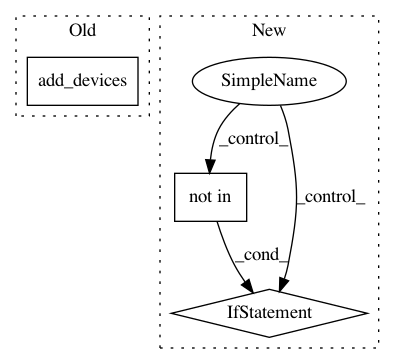

8703124c760df303d29571aa975a72cc4f868f09,homeassistant/components/media_player/yamaha.py,,setup_platform,#Any#Any#Any#Any#,48
Before Change
for receiver in receivers:
if receiver.zone not in zone_ignore:
hass.data[KNOWN].add(receiver.ctrl_url)
add_devices([
YamahaDevice(name, receiver, source_ignore,
source_names, zone_names)
], True)
class YamahaDevice(MediaPlayerDevice):
Representation of a Yamaha device.
After Change
source_names, zone_names)
// Only add device if it"s not already added
if device.unique_id not in hass.data[DATA_YAMAHA]:
hass.data[DATA_YAMAHA][device.unique_id] = device
devices.append(device)
else:
_LOGGER.debug("Ignoring duplicate receiver %s", name)
def service_handler(service):
Handle for services.
entity_ids = service.data.get(ATTR_ENTITY_ID)
In pattern: SUPERPATTERN
Frequency: 3
Non-data size: 3
Instances
Project Name: home-assistant/home-assistant
Commit Name: 8703124c760df303d29571aa975a72cc4f868f09
Time: 2018-01-17
Author: pierre.staahl@gmail.com
File Name: homeassistant/components/media_player/yamaha.py
Class Name:
Method Name: setup_platform
Project Name: home-assistant/home-assistant
Commit Name: dee6355cc59d7d84f8f7f3a4f1a8dc9b13f9d99e
Time: 2016-05-21
Author: Daniel.Kemp@especiallyrelative.net
File Name: homeassistant/components/media_player/onkyo.py
Class Name:
Method Name: setup_platform
Project Name: home-assistant/home-assistant
Commit Name: 80a794e587f9f63f28afea741f97e36a7ca8e427
Time: 2017-02-01
Author: wjs.scanlon@gmail.com
File Name: homeassistant/components/climate/wink.py
Class Name:
Method Name: setup_platform